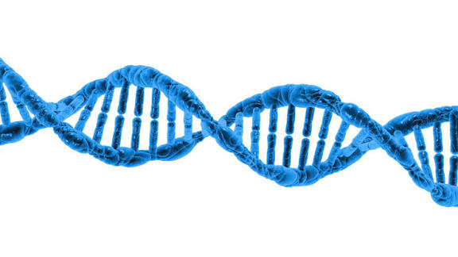
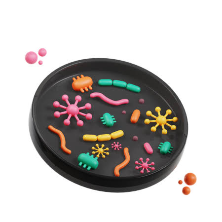
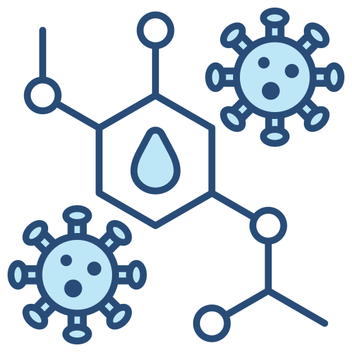
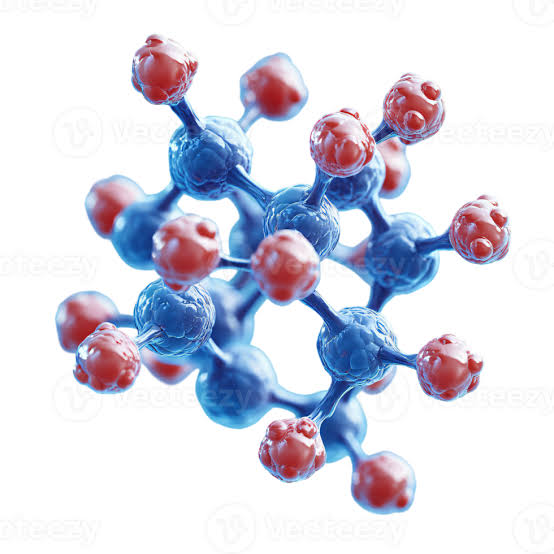

Catalogo de Servicios
Cada area del laboratorio gestiona un conjunto de examenes especificos. Dentro de cada examen se procesan una o mas pruebas con sus valores de referencia y resultados.
Hematologia
Analisis de celulas sanguineas y factores de coagulacion.
| Codigo | Examen | Pruebas incluidas | Muestra | Entrega |
|---|---|---|---|---|
| HEM-001 | Hemograma completo | Hematocrito, hemoglobina, leucocitos, plaquetas, recuento diferencial | Sangre venosa EDTA | 2 horas |
| HEM-002 | Perfil de coagulacion | Tiempo de protrombina (TP), tiempo de tromboplastina (TPA), fibrinogeno, INR | Sangre venosa citratada | 3 horas |
| HEM-003 | Factor VIII | Actividad del factor VIII de coagulacion | Plasma citratado | 4 horas |
| HEM-004 | Factor IX | Actividad del factor IX de coagulacion | Plasma citratado | 4 horas |
| HEM-005 | Anticoagulante Lupico | Screen paciente, screen control, ratio, confirmatorio | Plasma citratado | 6 horas |

Bioquimica Clinica
Determinacion de metabolitos, enzimas y sustratos en sangre y orina.
| Codigo | Examen | Pruebas incluidas | Muestra | Entrega |
|---|---|---|---|---|
| BIO-001 | Glucosa en ayunas | Glucosa serica | Suero | 2 horas |
| BIO-002 | Perfil lipidico | Colesterol total, HDL, LDL, trigliceridos, VLDL | Suero (ayunas 12h) | 3 horas |
| BIO-003 | Perfil hepatico | TGO, TGP, bilirrubinas, albumina, proteinas totales, fosfatasa alcalina | Suero | 4 horas |
| BIO-004 | Funcion renal | Urea, creatinina, acido urico, tasa de filtracion glomerular (TFG) | Suero | 3 horas |

Microbiologia
Identificacion de microorganismos y evaluacion de sensibilidad antibiotica.
| Codigo | Examen | Pruebas incluidas | Muestra | Entrega |
|---|---|---|---|---|
| MIC-001 | Urocultivo | Cultivo, identificacion de germen, antibiograma | Orina de chorro medio | 48 horas |
| MIC-002 | Hemocultivo | Cultivo aerobio y anaerobio, identificacion, sensibilidad | Sangre venosa | 72 horas |
| MIC-003 | Coprocultivo | Cultivo para enterobacterias, identificacion de patogeno | Heces frescas | 48 horas |

Inmunologia
Evaluacion del sistema inmune, autoanticuerpos y marcadores tumorales.
| Codigo | Examen | Pruebas incluidas | Muestra | Entrega |
|---|---|---|---|---|
| INM-001 | Perfil de autoinmunidad | ANA, anti-ADN, ANCA, complemento C3 y C4 | Suero | 24 horas |
| INM-002 | Marcadores tumorales basicos | CEA, AFP, CA 125, CA 19-9, PSA total | Suero | 24 horas |
Hormonologia
Medicion de hormonas y evaluacion del sistema endocrino.
| Codigo | Examen | Pruebas incluidas | Muestra | Entrega |
|---|---|---|---|---|
| HOR-001 | Perfil tiroideo completo | TSH, T3 libre, T4 libre, anticuerpos anti-TPO | Suero | 6 horas |
| HOR-002 | Hormonas reproductivas femeninas | FSH, LH, estradiol, progesterona, prolactina | Suero | 6 horas |
| HOR-003 | Cortisol y ACTH | Cortisol basal, ACTH, cortisol urinario 24h | Suero / Orina | 8 horas |

Biologia Molecular
Deteccion y cuantificacion de material genetico mediante tecnicas moleculares.
| Codigo | Examen | Pruebas incluidas | Muestra | Entrega |
|---|---|---|---|---|
| BIO-MOL-001 | PCR SARS-CoV-2 | Deteccion de ARN viral por RT-PCR en tiempo real | Hisopado nasofaringeo | 6 horas |
| BIO-MOL-002 | Carga viral VIH | Cuantificacion de copias de ARN-VIH por mL | Plasma EDTA | 24 horas |